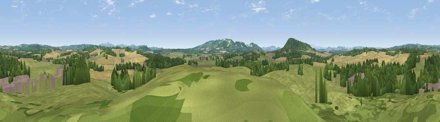

Viewpoint near Yarkhill
#18326 in England · top 47% of its area beats it · near Yarkhill · access?Where it is
The exact computed spot (SO 61625 44725). Click the marker for map links.
Public access: no public right of way or access land is recorded at this exact spot — it may be on private land. Computed from Natural England's CRoW access layer and OpenStreetMap rights of way — not the legal definitive map. Always verify locally.
The view, rendered

A 360° render of this exact spot computed from the terrain model, tree cover and land cover — summer colours, afternoon light, calibrated against photographs of famous viewpoints. Real trees, hedges and buildings will differ in detail.
The panorama
Grey silhouette: terrain skyline in each direction (720 bearings, Earth curvature and refraction included). Dashed green: skyline with trees (+15 m) and buildings (+8 m) as obstacles. Blue strip: how far the ground is visible on each bearing.
Where the view opens
Wedge length = distance to the farthest visible ground on that bearing (vegetation-aware). Rings at 10, 25 and 50 km.
What fills the view
52% grassland · 25% cropland · 21% woodland · 2% built-up
Angular shares of the visible panorama (visual magnitude), not map area. Landscape diversity 0.48 (0–1 Shannon).
Key numbers
More beautiful places nearby
The staircase of upgrades: each row has a higher view potential than everything closer. Driving times are estimates from straight-line distance, calibrated against real road routing — check an actual route before setting out.
| Place | Direction | Drive | Score |
|---|---|---|---|
| Egleton Hill | ENE · 2 km | ~6 min | 60.0 |
| Viewpoint near Yarkhill | WSW · 3 km | ~6 min | 64.8 |
| Viewpoint near Yarkhill | WSW · 3 km | ~8 min | 71.4 |
| Seagar Hill | S · 6 km | ~12 min | 82.1 |
| Herefordshire Beacon | ESE · 15 km | ~27 min | 85.8 |
| Millennium Hill | ESE · 15 km | ~27 min | 86.9 |
| Worcestershire Beacon | E · 15 km | ~27 min | 87.1 |
| Viewpoint near West Quantoxhead | SSW · 113 km | ~138 min | 87.9 |
52.09952, -2.56163 · source: screening · position refined by local search. Computed location — check access rights before visiting.